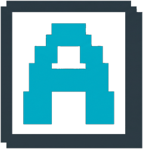
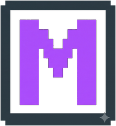
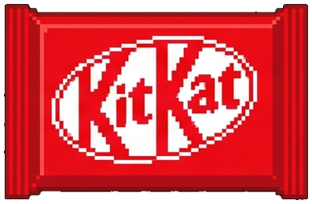

> build_log
first commit: researching....
Most assistive software is built for people rather than with them. When tools are designed around assumptions instead of lived reality, they fail — leading to a documented 35% abandonment rate across the industry. We spent a full phase grounding iris in real prevalence data, accessibility standards, and direct user feedback before writing a single line of code. No guesswork, no superficial overlays — just software built for true digital independence.
![Hand-drawn pixel-art chalkboard note: 'first commit: researching....' Most assistive software is built for people rather than with them. When tools are designed around assumptions instead of lived reality, they fail, leading to a documented 35% abandonment rate across the industry. We spent a full phase grounding iris in real prevalence data, accessibility standards, and direct user feedback before writing a single line of code. No guesswork, no superficial overlays, just software built for true digital independence.](assets/first-commit-board.jpg)


Refueling algorithms & testing speech models...
Recompiling brain cells between commits...

{ status: 'compiling', patience: 'depleting' }
"Iris is live. What used to require sight, literacy, and a steady hand now just requires a voice. This is the beginning, not the end of it."